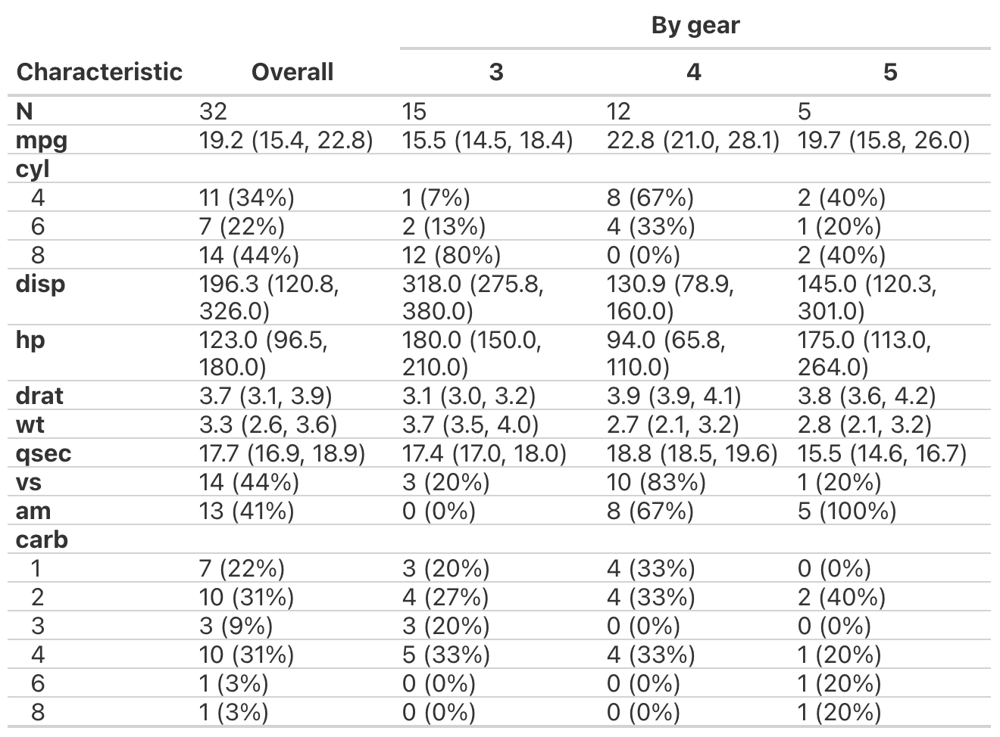
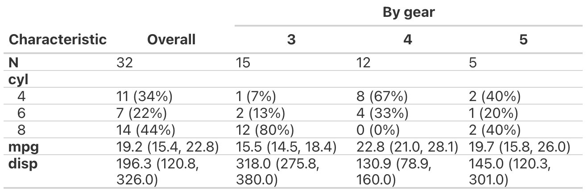

table1 wraps tbl_summary with some custom options:
Condensed formatting for better space use.
Stratification in columns with informative spanning headers, plus an "overall" column if desired.
First row with total count.
Rounding of continuous values to one decimal digit by default.
Data frame/tibble to print. Required.
Optional: Rows to include in table. If none are provided, all variables will be shown. Supports tidy evaluation; see examples.
Optional: Stratification variable for columns.
Optional: Show "Overall" column if stratifying? Defaults to TRUE.
Optional: Label for strata. If empty, the variable label or
variable name of the by variable will be used.
Optional: Level of precision (decimal digits) for statistics.
By default, all continuous variables are shown with one decimal digits
for both statistics, and all categorical variables are shown with integer-
rounded column percentages: all_continuous() ~ c(1, 1),
all_categorical() ~ c(0, 0).
Precision can also be changed for individual variables, e.g.:
all_continuous() ~ c(1, 1), # median, IQR limits
all_categorical() ~ c(0, 0), # count, percent
a_specific_variable ~ c(2, 2) # first, second statistic
Optional: Summary statistic to the shown for
specific variables, e.g.:
list(a_specific_variable ~ "{min}, {max}").
Passed on to tbl_summary(statistic = ...).
Optional: List with types per variable, which, at least by
default, will trigger which statistic is shown. For example:
type = list(gear ~ "continuous", vs ~ "dichotomous").
Passed on to tbl_summary(type = ...).
Optional. For indented lines of individual strata,
remove the upper horizontal border line? Defaults to TRUE.
Formatted table. Continuous variables are median (quartile 1, quartile 3); categorical variables are count (column percent).
Example 1

Example 2
